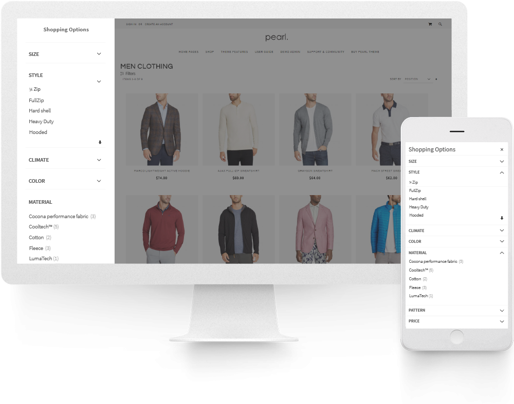
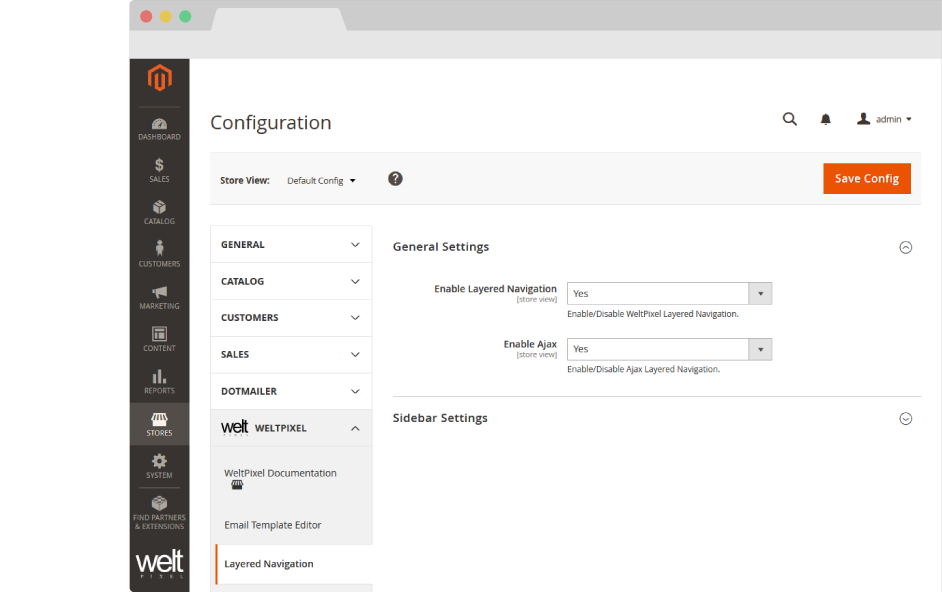
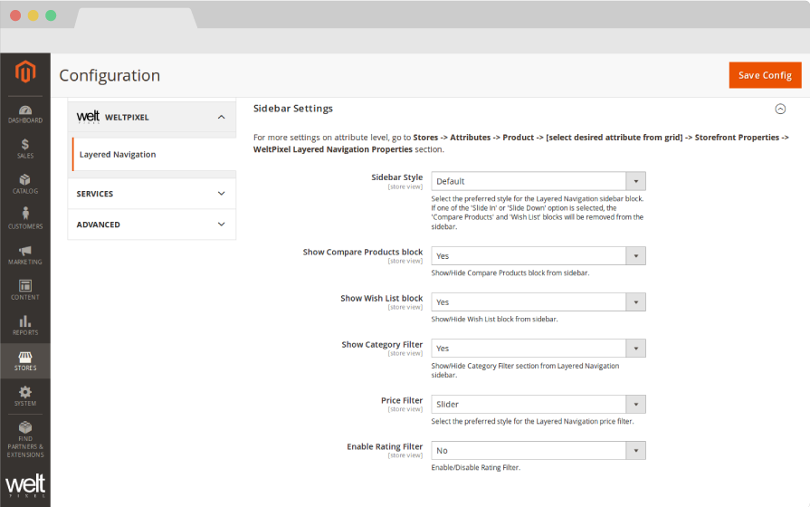
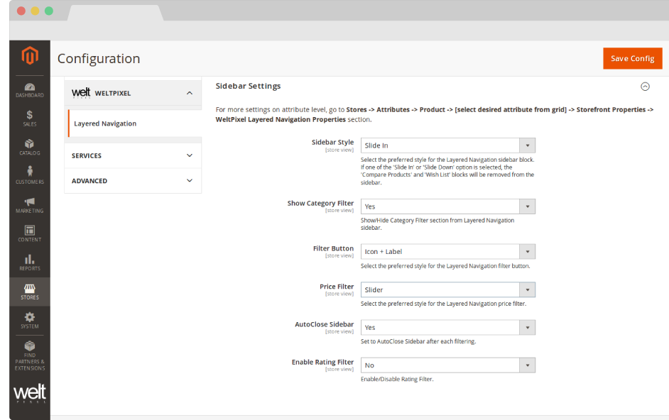
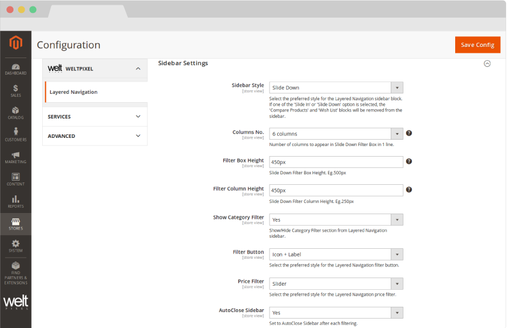
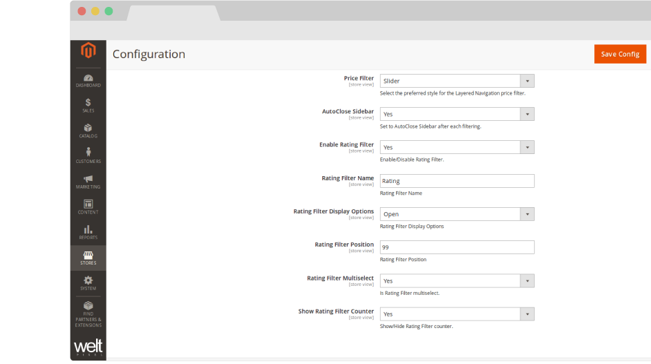
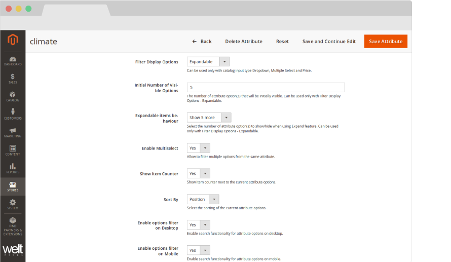
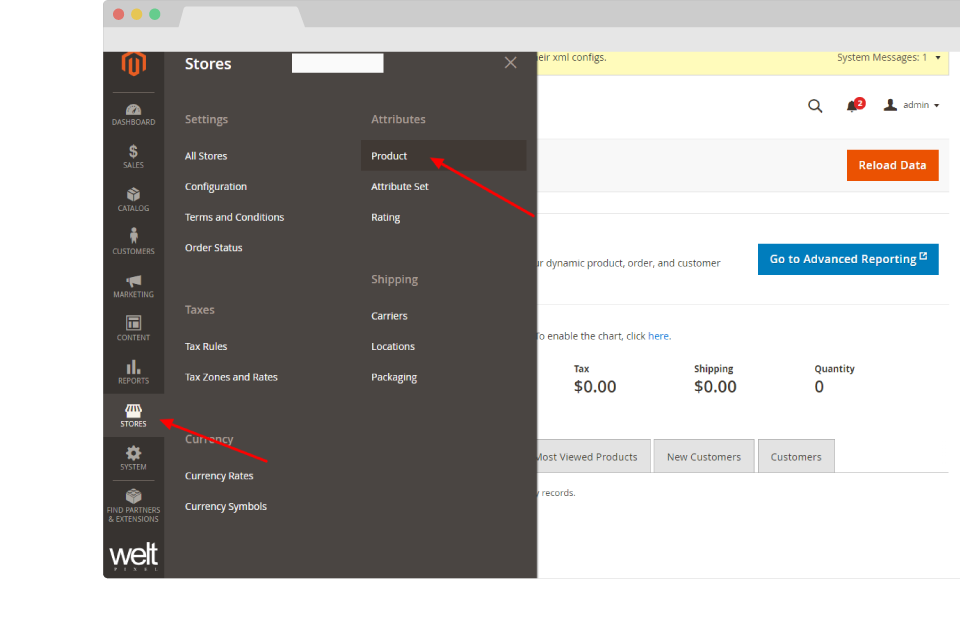
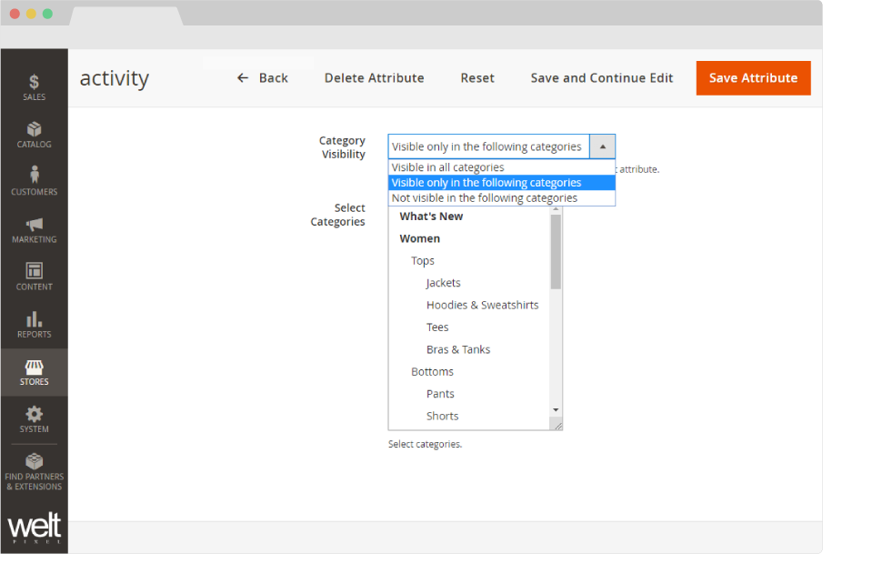

Guide for Magento 2 Layered Navigation Ajax Filter with Multi Select.
This extension is also included in the Pearl Theme.
HOW TO INSTALL
This extension is available in two versions: FREE/OPEN-SOURCE and PRO.
FREE/OPEN-SOURCE Version
The FREE version is open-source and available on GitHub:
https://github.com/Weltpixel/magento2-weltpixel-layered-navigation-lite
Please refer to the README file in the GitHub repository for installation instructions.
PRO Version Installation (Composer)
The PRO version is installed via Composer, which is the official and only supported installation method.
Step 1: Prerequisites
- Ensure your Magento version is compatible (2.3.0 - 2.4.8 and all Security Patches)
- Install on a testing/development environment first
- Set Magento to developer mode before installation
- Make sure you have Composer installed on your server
php bin/magento deploy:mode:set developer
Step 2: Access Composer Configuration
Head into the Downloadable Products section of your weltpixel.com account. This is where you'll be able to see your Composer Configuration Commands.
You'll need to have Composer installation enabled for your account. If you don't see the Composer Configuration Commands, please contact our support team.
Step 3: Configure Repository
Run the generated commands from your account. Example commands:
composer config repositories.weltpixel composer https://weltpixel.repo.packagist.com/your-id/
composer config --global --auth http-basic.weltpixel.repo.packagist.com token your-token
These commands will provide you access to the WeltPixel repository. Replace 'your-id' and 'your-token' with the actual values from your account.
Step 4: Install via Composer
Run the following command in your Magento root directory:
composer require weltpixel/m2-weltpixel-layered-navigation
Step 5: Enable and Setup
Run the following commands:
php bin/magento setup:upgrade php bin/magento setup:di:compile php bin/magento setup:static-content:deploy -f
Step 6: Cache Management
Flush any caches:
php bin/magento cache:flush
Step 7: Production Mode
If your store was in production mode, switch it back:
php bin/magento deploy:mode:set production
Wooohooo! The extension is now installed on your Magento store! Congrats!
How to Upgrade the PRO Extension
- Step 1: Run: composer update (for the package)
- Step 2: Run setup commands as shown above
- Step 3: Flush cache
How to configure Layered Navigation in Magento 2.
GENERAL SETTINGS.
- Enable Layered Navigation [Yes / No] - enable the Attribute Multi Select Ajax Filter
- Enable Ajax [Yes / No] - Ajax Filter eliminates the need of a full page refresh so your customers can experience a much faster and smoother transition while applying each filter.
- Scroll to top after Ajax load [Yes / No] - Trigger the page to scroll back to the top after a filter is applied via Ajax.
Go to Admin > WeltPixel > Layered Navigation > General Settings


SIDEBAR SETTINGS.
Default Style.
- Sidebar Style [Default / Slide In Vertical Filtering / Slide Down Horizontal Filtering / Horizontal View] - Select the preferred style for the Layered Navigation sidebar block. If one of the 'Slide In Vertical Filtering', 'Slide Down Horizontal Filtering' or "Horizontal View" options are selected, the 'Compare Products' and 'Wish List' blocks will be removed.
- Horizontal Design Version - Select the preferred version for the Horizontal Design (only appears if the Horizontal View Sidebar Style is selected). If version 3 is selected, additional options for Filter Button Color, Filter Button Text Color, Filter Button Hover Color and Filter Button Hover Text Color will be displayed.
- Display Selected Filters [Yes / No] - If set to "Yes", filters that have been selected will be displayed under the Layered Navigation.
- Allow Customer to Show/Hide Layered Navigation [Yes / No] - If set to "Yes", this will provide the customer the option to hide the Layered Navigation block. Works with the Default Design.
- Filters Default State [Open / Closed] - Choose the default state of the Filters in the Layered Navigation.
- Show Compare Products block [Yes / No] - Show/Hide Compare Products block from sidebar.
- Show Wish List block [Yes / No] -Show/Hide Wish List block from sidebar.
- Show Category Filter [Yes / No] - Show/Hide Category Filter section from Layered Navigation sidebar.
- Show Category Filter Options as [Closed / Fully Opened] - Choose whether the Category filter should be collapsed by default.
- Filter Button [Icon Only / Icon + Label / Label Only] - Select the preferred style for the Layered Navigation filter button.
- Price Filter [Default / Slider] - Select preferred style for the Layered Navigation price filter.
- Enable Rating Filter [Yes / No] - Enable/Disable Rating Filter.
Go to Admin > WeltPixel > Layered Navigation > Sidebar Settings
Slide In Vertical Filtering Style.
- Sidebar Style [Default / Slide In Vertical Filtering / Slide Down Horizontal Filtering] - Select the preferred style for the Layered Navigation sidebar block. If the 'Slide In Vertical Filtering' or 'Slide Down Horizontal Filtering' option is selected, the 'Compare Products' and 'Wish List' blocks will be removed.
- Show Category Filter [Yes / No] - Show/Hide Category Filter section from Layered Navigation sidebar.
- Filter Button [Icon Only / Icon + Label / Label Only] - Select the preferred style for the Layered Navigation filter button..
- Price Filter [Default / Slider] - Select preferred style for the Layered Navigation price filter.
- AutoClose Sidebar [Yes / No] - Set to AutoClose Sidebar after each filtering.
- Enable Rating Filter [Yes / No] - Enable/Disable Rating Filter.
Go to Admin > WeltPixel > Layered Navigation > Sidebar Settings


Slide Down Horizontal Filtering Style.
- Sidebar Style [Default / Slide In Vertical Filtering / Slide Down Horizontal Filtering] - Select the preferred style for the Layered Navigation sidebar block. If the 'Slide In Vertical Filtering' or 'Slide Down Horizontal Filtering' option is selected, the 'Compare Products' and 'Wish List' blocks will be removed.
- Column No. [1 / 2 / 3 / 4 / 5 / 6 column(s)] - Select to number of columns to be displayed in Slide Down Horizontal Filter Box in 1 row.
- Filter Box Height [in px] - Insert height of Slide Down Horizontal Filter Box. Eg: 450px
- Box Shadow - Enable to display a shadow for the Layered Navigation Slide Down box.
- Filter Column Height [in px] - Insert height for columns in Slide Down Horizontal Filter Box. Eg: 350px.
- Show Category Filter [Yes / No] - Show/Hide Category Filter section from Layered Navigation sidebar.
- Filter Button [Icon Only / Icon + Label / Label Only] - Select the preferred style for the Layered Navigation filter button..
- Price Filter [Default / Slider] - Select preferred style for the Layered Navigation price filter.
- AutoClose Sidebar [Yes / No] - Set to AutoClose Sidebar after each filtering.
- Enable Rating Filter [Yes / No] - Enable/Disable Rating Filter.
Go to Admin > WeltPixel > Layered Navigation > Sidebar Settings
Rating Options.
- Enable Rating Filter [Yes / No] - Enable/Disable Rating Filter.
- Rating Filter Name [text input] - Insert title for Rating Filter.
- Rating Filter Display Options [Open / Close] - Select initial state of Rating Filter.
- Rating Filter Position [number value] - Insert position of Rating Filter.
- Rating Filter Attribute Multi Select [Yes / No] - Enable Attribute Multi Select for Rating Filter.
- Show Rating Filter Counter [Yes / No] - Enable to show item counter next to each Rating option.
Go to Admin > WeltPixel > Layered Navigation > Sidebar Settings


Attribute SETTINGS
- Filter Display Options [Closed / Fully Opened / Exapandable] - Select how the attribute options are displayed. Can be used only with catalog input type Dropdown, Attribute Multi Select and Price Slider Ajax Filter.
- Initial Number of Visible Options - The number of attribute option(s) that will be initially visible. Can be used only with Filter Display Options - Expandable.
- Expandable items behaviour [All / Show x more] - Select the number of attribute option(s) to show/hide when using Expand feature. Can be used only with Filter Display Options - Expandable.
- Enable Attribute Multi Select [Yes / No] - Allow to filter multiple options from the same attribute.
- Keep attribute opened after filtering [Yes / No] - If set to Yes, the attribute will remain open in the sidebar after filtering with Multi Select.
- Show Item Counter [Yes / No] - Show item counter next to the current attribute options.
- Sort By [Position / Name] - Select the sorting of the current attribute options.
- Enable options filter on Desktop [Yes / No] - Enable search functionality for attribute options on Desktop.
- Enable options filter on Mobile [Yes / No] - Enable search functionality for attribute options on Mobile.
For more settings on attribute level, go to the Admin > Stores > Attributes > Product > [select attribute] > WeltPixel Layered Navigation Properties tab
How to enable Layered Navigation.
- Displaying of hiding an attribute from a category becomes essential when optimizing the store for the best user experience. It often happens that the store might have a category that matches an attribute. A great example for that are categories specifically for Genders or Brands.
- Ex: Men’s category contains products that are for the Gender, Men. In that situation the attribute becomes obsolete.
- To have full control over which attribute displays in a category simply follow the next steps:
- Store -> Attributes -> Product


- Select the desired attribute
- Go to WeltPixel Layered Navigation Properties and find the following two options down the page
- Category Visibility (Select visibility behavior in categories for the current attribute.) “Visible in all categories” is the default Magento behavior “Visible only in the following categories” will allow you to select specific attributes that you only want to display in a few categories “Not visible in the following categories” will allow you to select the very few categories where you would not like to display the attributes. Note: Product attributes will only show in categories that contain products with specific attributes.
- Select Categories allows you to select as many or as little categories as you prefer. The selected categories will have the behavior from Category Visibility.
Change Log.
What's new in v.1.16.0 - January 7, 2026
- Giving back: As a celebration of over 10 years of activity within the Magento 2 ecosystem, and as a way to give back to the community, a number of WeltPixel extensions (both FREE and paid) have officially gone fully Open Source via public Github repositories. Find the full list on Github.
- New Feature: Introduced composer as the official and singular installation method for all WeltPixel products. Previously, this was only available for the PRO version of the Google Analytics 4 extension, as well as the Marketing Suite Pro.
- The FREE version of this extension has moved to a fully Open Source model and is available publicly on Github. See the link in the Change Log entry above to find it.
What’s new in v.1.15.9 - October 28, 2025
- Magento Compatibility: Introduced compatibility with the latest released Magento 2 Security Patches - Magento 2.4.8-p3, Magento 2.4.7-p8, Magento 2.4.6-p13, Magento 2.4.5-p15 & Magento 2.4.4-p16.
- New Feature: Added improvements to Magento Admin messaging around Product Updates to ensure visual clarity for users not running the latest product release.
- New Feature: Added .ddev.site and .cloudwaysapps.com as accepted development domains. These domains will no longer require additional license keys.
What’s new in v.1.15.7 - September 2, 2025
- Magento Compatibility: Introduced compatibility with the latest released Magento 2 Security Patches - Magento 2.4.8-p2, Magento 2.4.7-p7, Magento 2.4.6-p12, Magento 2.4.5-p14 & Magento 2.4.4-p15.
- Added additional validations to prevent Magento Admin errors when the Backend extension could not fetch the current server user due to permissions issues.
- Added adjustments to frontend templates to adhere to Magento Best Practices regarding XSS validations.
- Fixed a CSP issue that would sometimes prevent orders from being created via the Magento Admin.
What’s new in v.1.15.3 - June 20, 2025
- Magento Compatibility: Introduced compatibility with the latest Magento 2.4.8-p1, 2.4.7-p6, 2.4.6-p11 & 2.4.5-p13 Security Patches releases. Upgrade ASAP to keep your store secure.
- Fixed the Backend functionality that enables users to change the default Magento CSP Restriction Mode via the Magento Admin. This was broken starting with Magento 2.4.7.
- Fixed a display issue specific to Mozilla Firefox that would result in scrollbars being added when using dropdown Horizontal Filtering.
What’s new in v.1.15.0 - April 22, 2025
- Magento Compatibility: Introduced compatibility with the new Magento 2.4.8 release, as well as the accompanying 2.4.7-p5, 2.4.6-p10, 2.4.5-p12 and 2.4.4-p13 Security Patches.
- PHP Compatibility: Introduced compatibilty with PHP 8.4, which is now officially compatible with the latest Magento 2.4.8 version.
- New Feature: Added magento2.docker as a valid domain for development purposes.
- New Feature: Added ddev.site as a valid domain for development purposes.
- Fixed an issue that would prevent certain extension options from correctly applying in Single Store Mode instances.
- Added backend licensing adjustments for compatibility with the Google Analytics & Social Marketing Suite PRO.
What’s new in v.1.14.13 - February 17, 2025
- Magento Compatibility: Introduced compatibility with the newly released Magento 2.4.7-p4, 2.4.6-p9, 2.4.5-p11 and 2.4.4-p12 versions.
- Fixed an issue related to licensing which would prevent license keys from being validated various subdomains.
What’s new in v.1.14.11 - January 15, 2025
- Fixed an issue that would prevent the default Category filter from working properly in cases in which the Magento Root Category was disabled.
- Removed deprecated Magento 2.2.x code version from extension package.
What’s new in v.1.14.9 - November 26, 2024
- Fixed a bug that would cause Category and Search Page sorting errors when the Ratings filter was enabled and sorting options based on custom attributes were being used.
- Added minor Magento Admin adjustments to the module status section for increased clarity and compatibility with server-side Social Pixel addons.
What’s new in v.1.14.7 - October 11, 2024
- Compatibility: Introduced compatibility with the latest Magento 2.4.7-p3, 2.4.6-p8, 2.4.5-p10 and 2.4.4-p11 versions, which come with critical security adjustments for the platform. Magento 2 merchants are urged to upgrade to the latest patches ASAP.
- New feature: Added a new Magento Admin setting that allows for displaying the default Category Filter as opened/closed by default.
- Added various code updates for increased security around the licensing functionality as well as the Help Center and WeltPixel Developer Magento Admin sections.
What’s new in v.1.14.5 - August 23, 2024
- Compatibility: Introduced compatibility with Elastic Search 8. The extension was previously not compatible (or required to be) as Magento no longer comes bundled with Elastic Search. Compatibility was added for users who manually install Elastic Search 8 via composer.
- Compatibility: Introduced compatibility with the latest Magento 2.4.7-p2, 2.4.6-p7, 2.4.5-p9 and 2.4.4-p10 versions, which come with critical security adjustments for the platform. Magento 2 merchants are urged to upgrade to the latest patches ASAP.
What’s new in v.1.14.3 - June 20, 2024
- Compatibility: Introduced compatibility with the latest Magento 2.4.7-p1, 2.4.6-p6, 2.4.5-p8, 2.4.4-p9 versions, which come with critical security adjustments for the platform. Magento 2 merchants are urged to upgrade to the latest patches ASAP.
- New Feature: Added a new section in the Magento Admin that checks to make sure the latest product version is installed and notifies in case an update is available, as well as a button that allows for new features to be requested.
What’s new in v.1.14.1 - April 19, 2024
- Fixed an issue whereby the extension's Slide In and Slide Down design modes would not function correctly when the Ajax feature was disabled.
- Confirmed compatibility with the latest Magento 2.4.7 release, as well as newly released 2.4.6-p5, 2.4.5-p7 & 2.4.4-p8 Security Patches.
- Confirmed compatibility with PHP 8.3 on the Magento 2.4.7 release. PHP 8.2 is also supported for this Magento version.
- Added security improvements to the Backend module's license verification process.
What’s new in v.1.11.21 - January 9, 2024
- Added various optimizations for ADA compliance to ensure a high degree of compatibility and increased scores across testing platforms.
- Added minor adjustments for increased compatibility with Varnish Caching in conjunction with the Google Analytics 4 extension.
- Added small adjustments to the JS Parser used alongside the Speed Optimization extension for performance improvements.
- Fixed an error that would be thrown in the WeltPixel -> Extensions Version admin section when a module's composer.json file was missing the version node.
What’s new in v.1.11.19 - October 19, 2023
- Fixed a bug that would cause the Category Page layout to break on Category Pages with special characters in the name, when using the extension in conjunction with the Google Analytics 4 extension.
- Adjusted the Horizontal Filter design to account for filter dropdowns with a large number of options. Previously, in some cases, the dropdown would extend beyond the height of the screen.
- Fixed an error that would sometimes be thrown upon loading Category Pages. This would happen when the extension was not able to determine an attribute's ID.
- Optimized the license verification process for increased Magento Admin performance, as well as to account for licensing server downtimes.
- Fixed an issue that would sometimes result in an error being thrown when using older PHP versions, such as PHP 7.4.
- Confirmed compatibility with the newly released Magento 2.4.6-p3, 2.4.5-p5, and 2.4.4-p6 Security Patches.
What’s new in v.1.11.17 - June 28, 2023
- New Feature: Added compatibility with Open Search. While Magento Open Source will continue to function with Elasticsearch, Magento Cloud now requires Open Search as the default Search Engine.
- Fixed a bug that would sometimes cause an error related to the Multi Select functionality to be displayed on the Category Page.
- Fixed a small bug that would cause the Product Count on the Category Page to disappear when a filter was applied.
- Fixed an issue that would prevent the stars from displaying in the Ratings Filter.
- Added minor PHP 8.2 related adjustments.
- Confirmed compatibility with the latest Magento Security Patch releases 2.4.6-p1, 2.4.5-p3 and 2.4.4-p4.
- Fixed an error related to PHP 8.2 that would show when accessing the WeltPixel Debugger.
- Added .localdev as a universally accepted licensing domain.
What’s new in v.1.11.15 - March 22, 2023
- Fixed a bug that would occasionally prevent certain frontend notification messages from being displayed.
- Fixed an error that would sometimes be thrown in the WeltPixel Debugger, depending on various server permissions.
- Added compatibility with the latest Magento 2.4.6 and 2.4.5-p2 versions.
What’s new in v.1.11.11 - November 23, 2022
- New Feature: Added compatibility with the Google Analytics 4 PRO for sending Item List Views via Measurement Protocol.
- Applied adjustments for increased compatibility with 3rd party Shop By Brand extensions.
- Confirmed compatibility with the latest Magento Security Patch releases 2.4.5-p1 and 2.4.4-p2.
What’s new in v.1.11.7 - September 1, 2022
- Fixed an issue that caused the browser back button to return to the previous page when Ajax Filters were applied, as opposed to removing the applied filter.
- Fixed a bug that prevented the Price Slider from functioning on Magento 2.4.4.
- Performed various code cleanups related to PHP 8.1.
- Confirmed compatibility with the latest Magento 2.4.5 and 2.4.4-p1 versions.
- Updated installation/upgrade scripts to use data patches.
What’s new in v.1.11.1 - April 25, 2022
- New Feature: Moved all the WeltPixel Layered Navigation options under their own tab in the Admin -> Stores -> Attributes -> Product section, at the attribute configuration level.
- New Feature: Added a new option in the Magento Admin that allows for choosing whether the page should scroll back to the top after filtering via the Ajax functionality.
- New Feature: Added a new option in the Magento Admin that allows for keeping an attribute fully opened in the sidebar after filtering with Multiple Select.
- Initiated a clear of the dataLayer eCommerce object before a push event - This applies only when using the extension together with the Google Tag Manager and/or Google Analytics 4 modules.
- Applied various optimizations to the extension's DB operations which sometimes caused sluggish performance on very large product catalogs.
- Applied optimizations to the filtering functionality to increase compatibility with 3rd party Brand/Shop by Brand modules.
- Fixed an incorrect licensing message on B2B Magento Enterprise instances which would display when an invalid license was entered.
- Confirmed compatibility with the latest Magento 2.4.4 and 2.3.7-p3 versions as well as PHP 8.1.
What’s new in v.1.10.17 - August 31, 2021
- Fixed a bug that that caused an inability to load a product collection when accessing a Product Page and clicking the back button in a browser after having initially filtered products using an attribute ending in the letter "p". This only happened in conjunction with the Ajax Infinite Scroll extension.
- Fixed a small display issue that caused filters text to display on two lines when the label was comprised out of more than one word and the filter was set to be Fully Opened.
- Confirmed compatibility with the latest Magento 2.4.3-p1 and 2.3.7-p2 versions.
What’s new in v.1.10.15 - August 31, 2021
- Excluded the Hidden Filters functionality from applying on mobile. Before this fix, there would be certain cases in which filters could not be accessed on mobile when the setting was enabled.
- Overhauled various JS files related to the Layered Navigation for improved overall performance.
- Confirmed compatibility with the newly released Magento 2.4.3, 2.4.2-p2 and 2.3.7-p1 versions.
- Added .localhost as an accepted domain termination for the licensing process.
What’s new in v.1.10.11 - July 7, 2021
- New feature: Added new Slide-Down Filtering Design options for adding a Box-Shadow to the Layered Navigation.
- Fixed an error that was thrown when the Ajax functionality was disabled and the Category Filter was enabled.
- Added CSS adjustments for the Price Filter to ensure proper display.
- Added improvments to the WeltPixel Developer Magento Admin section. Latest Cron Jobs now lists the last 100 executed Cron Jobs.
What’s new in v.1.10.9 - May 18, 2021
- New Feature: Added new border design options for Horizontal Filtering buttons.
- Optimized CLS score by improving element load order for the Horizontal Layered Navigation design.
- Fixed a minor alignment issue related to the "Now Shopping by" text that occured after filtering via the Slide Down Layered Navigation design.
- Fixed a bug that caused an error to be thrown when using the Reviews filter with the Ajax functionality disabled.
- Added design adjustments to the Slider Price Filter display mode.
- Minor backend comment adjustments for increased clarity.
- Confirmed compatibility with the newly released Magento 2.3.7 and 2.4.2-p1 versions.
What’s new in v.1.10.7 - March 26, 2021
- New Feature: Added a new Horizontal Design version whereby you can now add borders and change the border radius, button colors and hover colors for filters in the Horizontal Design.
- Fixed an issue related to the Horizontal Design mode that caused pages to duplicate on Category Pages.
- Excluded Magento 2.0.x - 2.2.x from new features and fixes starting with this release.
- Adjusted WeltPixel Developer section comments.
What’s new in v.1.10.5 - February 12, 2021
- New Feature: Added a transition animation on mobile when opening the Layered Navigation, as well as when collapsing filter options.
- New Feature: Added the possibility of showing/hiding filters on the Default Display Mode for the Layered Navigation.
- Fixed a bug that caused the Multi-Select functionality to stop working when Ajax was disabled via the module settings.
- Fixed a decimal issue related to the Slider Price Filter.
- Made CSS adjustments to the Horizontal display mode.
- Confirmed compatibility with the newly released Magento 2.4.2 version.
- Added additional backend versioning verifications.
- Backend module code optimizations.
What’s new in v.1.10.1 - October 22, 2020
- New Feature: Added a new filtering design option - Horizontal Filtering.
- New Feature: Added a transition animation when opening the Layered Navigation on mobile.
- Fixed an issue related to the Price Filter on multi-store environments with different Display Currencies configured whereby the Price Filter in the Layered Navigation did not update the currency displayed to the configured Display Currency.
- Fixed a bug related to Swatch Tooltips in the Layered Navigation. Previously, if a Product on the Category Page was configured with a Swatch Color, the Tooltips in the Layered Navigation would only show that specific color, regardless of what color was selected in the Layered Navigation.
- Fixed an issue related to Swatches in the Layered Navigation whereby they would look different to the Swatches on the Category Page and had a black, square outline added.
- Fixed a bug that caused an error to be thrown on Magento 2.4.x when filtering via the Category Filter.
- Added additional verifications.
- Confirmed compatibility with the newly released Magento 2.4.1 version.
What’s new in v.1.10.0 - August 10, 2020
- Confirmed compatibility with the newly released Magento 2.4.0 version.
What’s new in v.1.9.8 - July 6, 2020
- New feature: Added compatibility for Elastic Search 7.
- Fixed a small display issue whereby the Slide In Vertical Navigation design overlapped with various elements in the Sticky Header.
- Fixed a bug related to the jQuery UI patch for Magento 2.3.0 - 2.3.2 which affected the Slide In and Slide Down designs.
- Changed aligment for Swatches on the Slide Down design for esthetic purposes.
- Added additional error handling.
- Code cleanup.
- Whitelisted domain for Content Security Policies introduced in Magento 2.3.5.
What’s new in v.1.9.7 - May 7, 2020
- Added a new setting which allows for enabling and displaying a Recently Ordered block within the Layered Navigation.
- Fixed a bug which prevented the Attribute Category Visibility option from taking additional Root Categories into consideration.
- Fixed a bug which caused the Layered Navigation to open after using Category Sorting or Pagination, when set to Slide In Vertical Filtering display mode.
- Fixed an issue that caused filter options to overlap with the menu on Slide In Vertical filtering display mode.
- Fixed a JS error that was thrown on the frontend when using the Slide In Vertical filtering display mode.
- Adjusted jQuery UI patch released in the previous version to fix an error thrown on Magento 2.3.2.
- Fixed an issue which prevented the disabling of Multiselect for the Price filter.
- Added new translations.
- Confirmed compatibility with Magento 2.3.5.
- Implemented small Backend performance optimizations.
- Added nxcli.net (Nexcess temporary URL) as a valid domain in the licensing process.
- Added an option in the Developer section to allow for switching Magento's CSP between "report-only" and "restrict".
What’s new in v.1.9.6 - April 9, 2020
- Fixed a potential error related to the Price Filter when used with Elastic Search.
- Added a patch for jQuery UI (Magento 2.3.0 - 2.3.2).
- Fixed a Backend issue on Magento Commerce whereby the Category Schedule functionality was not working properly.
What’s new in v.1.9.5 - March 10, 2020
- Fixed an issue whereby certain backend options would become unusable when upgrading from the FREE version to the PRO version.
- Fixed a console error shown on mobile when the Price Filter was set to display as a Slider.
- Fixed a console error that occurred when applying a filter via Ajax.
- Assured compatibility for later versions of Elastic Search 6.0+
- Backend label text changes.
- Added backend Google reCaptcha compatibility for Magento 2.3.x
What’s new in v.1.9.4 - February 5, 2020
- Fixed an issue related to Multi-Select which caused Color filters to disappear when filtering by Color, Size and then Color again.
- Fixed an issue that prevented disabled products from disappearing from the frontend when filtering via the Category filter.
- Fixed a display issue related to the Ratings Filter - the filter was missing visual confirmaton that it was selected.
- Fixed a bug which, in some cases, prevented items from being added to cart after a page load with Infinite Scroll.
- Fixed an bug that prevented the page from returning to the top when changing pages via Ajax Next Page.
- Fixed a bug that caused subcategories in the menu to overlap with the filter button.
- Fixed a bug related to Ratings Filter Multi-Select - this option was not working.
- Code enhancements for increased security. Changed User Group info collection method.
- Confirmed compatibility for Magento 2.3.4.
What’s new in v.1.9.2 - November 27, 2019
- Fixed a bug which caused Swatches to display incorrectly after filtering or sorting via Ajax.
- Added Magento and PHP version in the WeltPixel Developer section.
What’s new in v.1.9.1 - October 16, 2019
- Introduced compatibility with Elastic Search 6.0+. The module was previously only compatible with Elastic Search up to version 5.0+.
- Removed an unnecessary comment from the Admin Section related to the Multiselect option.
- Added escape HTML/JS tags to prevent XSS (Cross site scripting).
- Fixed an issue whereby the Layered Navigation would open by itself after selecting a sorting option on the Category Page (Slide Down design).
- Fixed an issue that caused Swatches to disappear from the Category Page products after sorting or filtering and scrolling to the next page.
- Confirmed compatibility with the latst Magento 2.3.3 version.
- Included the WeSupply Toolbox integration extension - Proactive Notifications Email & SMS, Returns & RMA, Store Locator, Delivery Date Estimate, Logistics Analytics, NPS & CSAT score. Get Free on-boarding and launch within 24 hours.
What’s new in v.1.9.0 - July 18, 2019
- Fixed an issue on mobile whereby Multi-Select filters that were selected would not properly show this.
- Confirmed compatibility with Magento 2.3.2.
- Added HTTPS endpoint for licensing process.
What’s new in v.1.8.5 - June 7, 2019
- Fixed an issue whereby the number of items in the toolbar did not match the number of items in the collection.
- Fixed an error that occured when the Price Navigation Step Calculation option was set to Automatic (equalize product counts).
- Fixed an error that occured on certain configurations when using the Ratings filter.
- Fixed a bug which prevented scrolling on mobile devices.
- Small performance improvements.
What’s new in v.1.8.4 - April 25, 2019
- Fixed an issue where the Slide In filter would overlap with the Sticky Header on certain configurations.
- Added PHP version in the WeltPixel Developer Section.
What’s new in v.1.8.3 - April 3rd, 2019
- Fixed a bug related to the Price filter on the Search Results page.
- Optimized Price slider to remember initial price range.
- Enabled MultiSelect option for Swatch type attributes.
- Fixed an issue on the Search Results page when filtering while Infinite Scroll was enabled. Sometimes, not all products were loaded.
- Added the option for Swatch Attributes to be Fully Opened or Closed.
- Fixed Show More/Less Attribute Options functionality on mobile devices.
- Confirmed compatibility for Magento 2.3.1.
What’s new in v.1.8.2 - January 24, 2019
- Disabled fields that are not applicable for swatch attribute types in order to avoid confusion.
- Logo overlay fix.
- Fixed a bug that prevented the correct functionality of Layered Navigation when Infinite Scroll was disabled - compatibility fixes.
- Layered Navigation - fixing Sort By mobile filter, this filter was not working correctly with the Free version of this extension, Pro version worked correctly.
- Helpcenter adjustment, removed zendesk iframe and added a simple link to our Support Center in order to avoid any potential conflicts with other admin js added by 3rd party extensions.
- Fix for multiple rewritten ImageFactory classes, rewrite check validity, rewrite checks optimizations.
What’s new in v.1.8.0 - December 8, 2018
- Fixed an error that occured in Magento 2.1.x while checking for an existing category in the registry.
- Fixed a bug where the Mega Menu was not loading on Internet Explorer due to unrecognized function.
- Compatibility adjustments for Magento 2.1.16/2.2.7/2.3.0.
- PHP 7.2 compatibility added.
- As Magento 2.3 comes with major core changes, we have provided a different set of files in order to achieve the best performance on each version.
What’s new in v.1.7.5 - October 24, 2018
- Price slider drag fix on mobile devices.
- Fixed page header and nav-section z-index.
- Fixed bug on category filtering on more than level 3 categories.
- Added compatibility with our newly released WeltPixel Product Labels Extension.
- Added detailed error messages for invalid licenses for an easier identification of the cause.
- License improvements, added *.magento.cloud as a valid test domain for Enterprise Cloud environments. Now both ‘magentosite.cloud’ and ‘magneto.cloud’ can be used for testing purpose with the production domain license.
What’s new in v.1.7.4 - September 25, 2018
- Layered Navigation Pro - possibility to hide attribute on specific category.
- Hot fix for Magento 2.1.x and WeltPixel Layered Navigation version greater than 1.7.2, category page was broken in M2.1.x when Layered Navigation was enabled.
- Layered Navigation - fixed issue which prevented user to create new attributes when layered Navigation was enabled.
- Layered Navigation scroll bar design adjustments.
- Added compatibility with just released Advance Category Sorting extension by WeltPixel.
- Layered Navigation overlay fix with logo, top links, sticky header.
- Admin menu styling to fit screen size 1366px.
- Fix for production mode with merged JS - missing color pallet display now fixed.
What’s new in v.1.7.3 - August 23, 2018
- New feature: Added search by product ratings. (Pro version)
- LNew feature: Added Ajax Price Slider functionality. (Pro version)
- Design and documentation improvements.
- License improvements, adding *.magento.cloud as a valid test domain.
What’s new in v.1.7.2 - August 2, 2018
- Added Slide down Layered Navigation Design (Pro version only).
- Added Instant Search Functionality (Pro version only).
- Fixed Navigation overlapping store logo.
- Add data layer impression push to Google Tag Manager on Ajax requests.
- Fixed Non Sticky header menu overlapping in Slide In design.
- Additional compatibility adjustments with WeltPixel Infinite Scroll and Ajax catalog.
- Fixed admin random logout issue.
- Licensing improvements, allowing 3 letter domain as valid domain.
What's new in v.1.7.1 - July 11, 2018
- Compatibility with Magento 2.2.5 both Open Source & Commerce Cloud B2B.
- Added domain.test & [any_subdomain].domain.test to the list of valid urls for staging/development environments. Added domain validation with port number included for licensing purpose.
- Added licensing compatibility with Magento B2B.
What’s new in v.1.7.0 - July 10, 2018
- Initial release